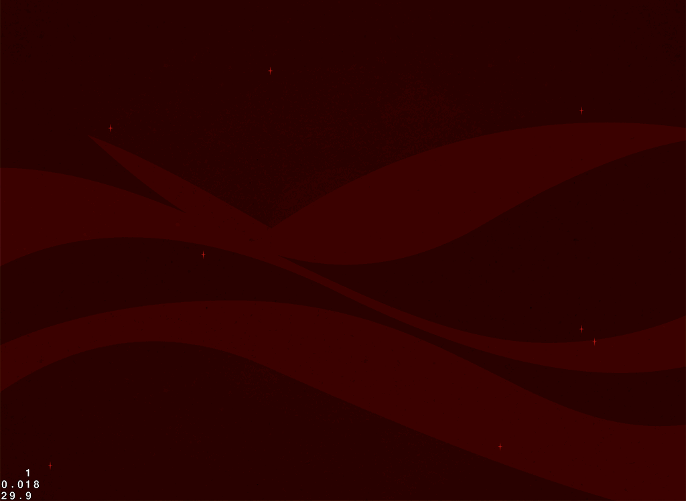
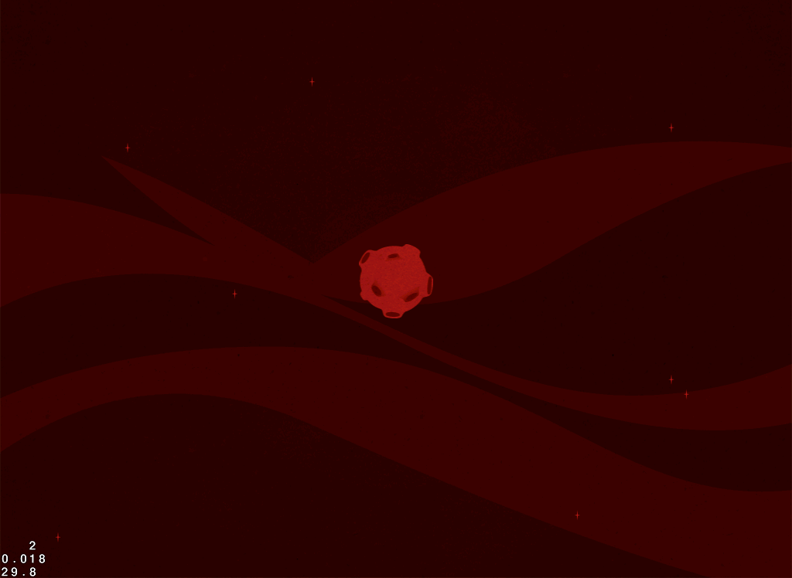
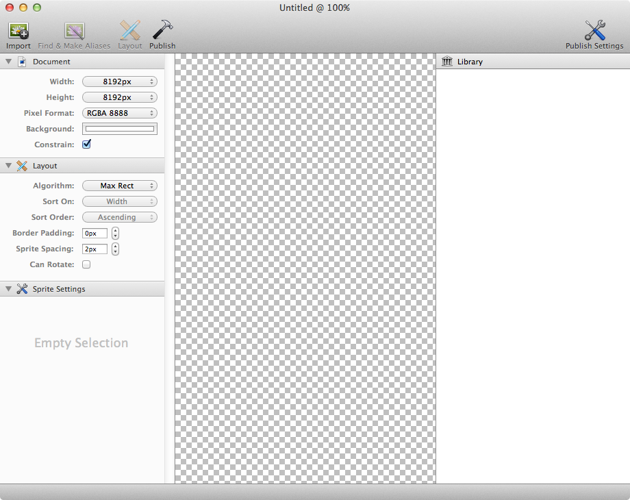
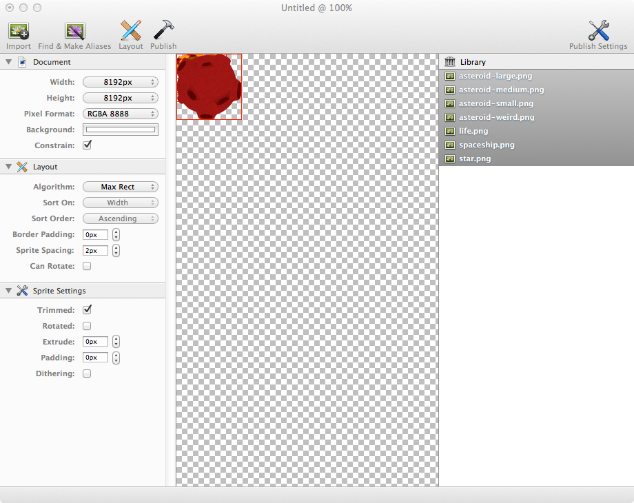
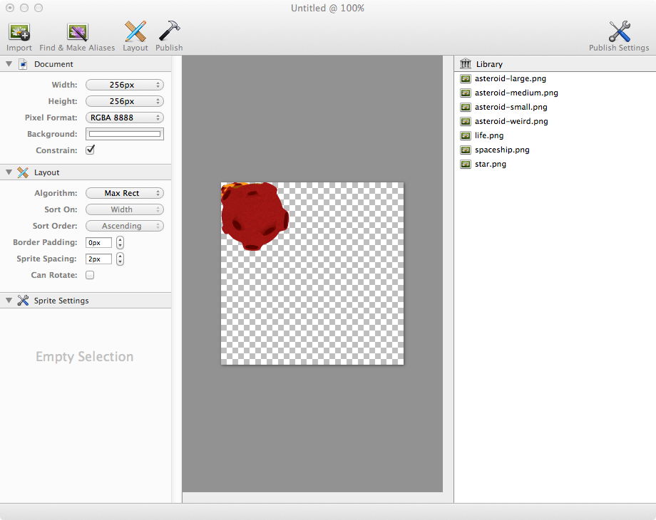
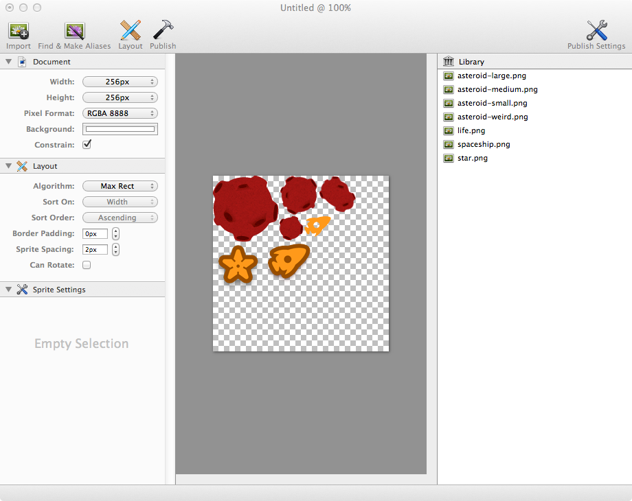
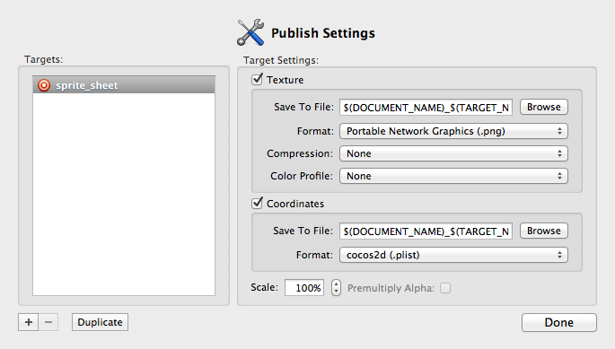

Pack everything before space jump
The last time we look at our game we have an empty implementation of the game scene, if we open our game_scene.rb file, it should look something like the following:
class GameScene < Joybox::Core::Scene
def on_enter
end
end
Let's download the Round 4 Assets and upzip them, inside we will find two folders:
- Game - This folder should be copied into the resources folder of our game.
- Sprite Sheet - We will use this folder a little bit later when we create our sprite sheet.
Now we can start working on the Game Scene creating a background for it, please create a new file named background_layer.rb inside our layers folder and place the following inside it:
class BackgroundLayer < Joybox::Core::Layer
def on_enter
background_sprite = Sprite.new file_name: 'sprites/game/background.png', position: Screen.center
self << background_sprite
end
end
 For more information about the Sprite, see: Sprite documentation page.
For more information about the Sprite, see: Sprite documentation page.
For more information about the Layer, see: Layer documentation page.
As we already know we need to present it on the Game Scene and this is done by adding the following into the game_scene.rb file:
class GameScene < Joybox::Core::Scene
def on_enter
background_layer = BackgroundLayer.new
self << background_layer
end
end
For more information about the Scene, see: Scene documentation page.
And if we run our game and press the touch to start button:

Game Layer
It's time to create a new layer that will help us with loading the core pieces of our game (Asteroids and the Space Ship) and handling the interaction of the user at game time, please create a new file inside the layers folder with the name game_layer.rb:
class GameLayer < Joybox::Core::Layer
def on_enter
end
end
And present it on the game_scene.rb changing the following:
class GameScene < Joybox::Core::Scene
def on_enter
background_layer = BackgroundLayer.new
self << background_layer
game_layer = GameLayer.new
self << game_layer
end
end
Well is not a mistery that if we run the game at this time we should not see any diference at all, so lets add a sprite to the game_layer.rb:
def on_enter
test_sprite = Sprite.new file_name: 'sprites/game/asteroid-large.png', position: Screen.center
self << test_sprite
end
If we run our game we should see the following when we hit the touch to start button:

Watch out!
Please take notice that we are loading the sprite the same way that we are presenting the backgrounds.
As we see in the previous round videos using standard images to load the game sprites is very dangerous in terms of performance and memory, which at the long term (Presenting more than 20 sprites on the screen) will make our game feel like is shuttering. They way to go at this point is to build a sprite sheet and load the asteroids using it!
Build the Sprite Sheet
In order to create an Sprite Sheet we need to use an external application, the most populars for this are TexturePacker and Zwoptex. For the rest of the tutorial I will use Zwoptex but you can go with either of them.
After installing them the first step is create a new document, which should look as the following:

The next step is to add the images that we want to be included in the sprite sheet, for this lets open the resources that we previously downloaded and drag and drop all the images that are contained in the Sprite Sheet/Regular folder into the Library Section of the application:

Watch out!
You should not add the retina images to this sprite sheet. It will be needed to build two different sprite sheets: the retina and the normal.
Now on the Document menu of the application which is on the left side, lets configure the size we want for our sprite sheet, in this case 256px x 256px:

Its time to order all the images into the sprite sheet, you can do it manually but is best to use the Layout button in the top menu:

Before we can export the sprite sheet they are a couple of steps we need to do first, please save the sprite sheet with the name game and open the publish settings (There is a button on the top right side of the application).
We need to change two things on the Publish Settings, the first is on the bottom right part, change the Cordinates Format to cocos2d (.plist):
The second is on the left part change the target name from default to sprite_sheet by doble clicking it:

Save the settings by clicking the done button and publish the sprite sheet using the button on the top menu, after the export we should have two different files: game_sprite_sheet.png and game_sprite_sheet.plist:
- Plist - Contains all the metadata of the images and their respective coordinates inside the sprite sheet.
- PNG - Is the image that we previusly layout inside the application.
This two files are our sprite sheet, to continue please create a new folder named sprite_sheets inside the game's resource folder and copy this two files inside it.
Level Up!
Analyze the contents of the Plist file.
Use the Sprite Sheet
In order to use our new sprite sheet we have to tell the game which sprite sheet to load and its respective metadata, for this two objects are needed: SpriteBatch and SpriteFrameCache. We can start implementing it by open the game_layer.rb and addign the following:
class GameLayer < Joybox::Core::Layer
def on_enter
SpriteFrameCache.frames.add file_name: 'sprite_sheets/game_sprite_sheet.plist'
end
end
In this code we are telling the game that we want to add the sprite sheet frames (metadata) to the game cache, now we can load the sprite sheet image:
class GameLayer < Joybox::Core::Layer
def on_enter
SpriteFrameCache.frames.add file_name: 'sprite_sheets/game_sprite_sheet.plist'
@sprite_batch = SpriteBatch.new file_name: "sprite_sheets/game_sprite_sheet.png"
self << @sprite_batch
end
end
More intel!
We are adding the SpriteBatch object as a child of the layer.
We create a new SpriteBatch object passing the sprite sheet image as parameter, now is time to load our sprite asteroid. Please take a close look at the following code:
class GameLayer < Joybox::Core::Layer
def on_enter
SpriteFrameCache.frames.add file_name: 'sprite_sheets/game_sprite_sheet.plist'
@sprite_batch = SpriteBatch.new file_name: "sprite_sheets/game_sprite_sheet.png"
self << @sprite_batch
test_sprite = Sprite.new frame_name: 'asteroid-large.png', position: Screen.center
@sprite_batch << test_sprite
end
end
When we create the sprite we are not telling anymore which image should it use, instead we are using a frame_name, this value is contained in the Plist metadata file and usually is the name of the image imported into the texture application.
But how the game knows from which image it should load the frame?, If you look closelly you can see that we are not adding the sprite to the layer anymore, instead we are adding the sprite to the sprite batch object which cointains the sprite sheet image.
In a nutshell the Sprite has a frame name, the SpriteFrameCache knows every frame in the sprite sheet and the SpriteBatch contains the corresponding image for those frames.
For more information about the SpriteFrameCache, see: Sprite Frame Cache documentation page.
For more information about the SpriteBatch, see: Sprite Batch documentation page.
Watch out!
You will only need one Sprite Batch object for all the sprites in a layer or scene.
Level Up!
You can change the frame name altering the Plist file.
If we run our game now and press the touch to start button, we should see the following:
Round 5
Not really a big change but now we are a little more safe on the memory and performance side, in the next round we will continue building the asteroids game logic. For the moment a little challenge:
Build the retina display sprite sheet and test it by presenting three different asteroids on the screen.
You can download the source code of this round from: Easy Level - Round 4